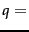
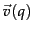
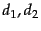
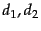
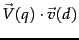
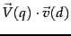
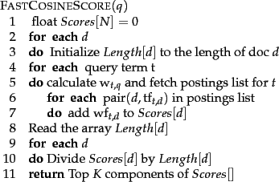
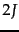
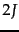

Next:
Inexact top K document
Up:
Computing scores in a
Previous:
Computing scores in a
Contents
Index
Efficient scoring and ranking
We begin by recapping the algorithm of Figure 6.14 . For a query such as  jealous gossip, two observations are immediate:
- The unit vector  has only two non-zero components.
- In the absence of any weighting for query terms, these non-zero components are equal - in this case, both equal 0.707.
For the purpose of ranking the documents matching this query, we are really interested in the relative (rather than absolute) scores of the documents in the collection. To this end, it suffices to compute the cosine similarity from each document unit vector  to
to  (in which all non-zero components of the query vector are set to 1), rather than to the unit vector . For any two documents 
(in which all non-zero components of the query vector are set to 1), rather than to the unit vector . For any two documents 
 |
(34) |
For any document
 , the cosine similarity
 is the weighted sum, over all terms in the query
, the cosine similarity
 is the weighted sum, over all terms in the query
 , of the weights of those terms in
. This in turn can be computed by a postings intersection exactly as in the algorithm of Figure
6.14 , with line 8 altered since we take
, of the weights of those terms in
. This in turn can be computed by a postings intersection exactly as in the algorithm of Figure
6.14 , with line 8 altered since we take
 to be 1 so that the multiply-add in that step becomes just an addition; the result is shown in Figure
7.1 . We walk through the postings in the inverted index for the terms in
, accumulating the total score for each document - very much as in processing a Boolean query, except we assign a positive score to each document that appears in any of the postings being traversed. As mentioned in Section
6.3.3 we maintain an idf value for each dictionary term and a tf value for each postings entry. This scheme computes a score for every document in the postings of any of the query terms; the total number of such documents may be considerably smaller than
to be 1 so that the multiply-add in that step becomes just an addition; the result is shown in Figure
7.1 . We walk through the postings in the inverted index for the terms in
, accumulating the total score for each document - very much as in processing a Boolean query, except we assign a positive score to each document that appears in any of the postings being traversed. As mentioned in Section
6.3.3 we maintain an idf value for each dictionary term and a tf value for each postings entry. This scheme computes a score for every document in the postings of any of the query terms; the total number of such documents may be considerably smaller than
 .
.
Figure 7.1: A faster algorithm for vector space scores.
|  |
Given these scores, the final step before presenting results to a user is to pick out the  highest-scoring documents. While one could sort the complete set of scores, a better approach is to use a heap to retrieve only the top documents in order. Where
highest-scoring documents. While one could sort the complete set of scores, a better approach is to use a heap to retrieve only the top documents in order. Where  is the number of documents with non-zero cosine scores, constructing such a heap can be performed in  comparison steps, following which each of the highest scoring documents can be ``read off'' the heap with
is the number of documents with non-zero cosine scores, constructing such a heap can be performed in  comparison steps, following which each of the highest scoring documents can be ``read off'' the heap with  comparison steps.
comparison steps.
Subsections
Next:
Inexact top K document
Up:
Computing scores in a
Previous:
Computing scores in a
Contents
Index
© 2008 Cambridge University Press
This is an automatically generated page. In case of formatting errors you may want to look at the PDF edition of the book.
2009-04-07